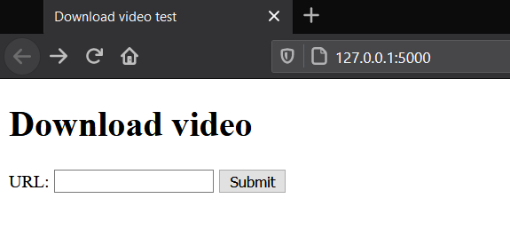

There have been many times where I have watched something online only for it to be removed later, either by its creator, or by YouTube. This stuff can be very juicy.
Here's my goals for this project:
This project will be split into two parts - the first is a server, which will download videos when it is sent an instruction to do so. This instruction will be sent from the second part of the project - a browser extension that will monitor my YouTube traffic.
Currently, the best way to download YouTube videos is with youtube-dl, which is a python module, so I'm going to write the server in python which should make it easy to use. It's been a while since I've written anything in Python, so this should be interesting.
I'm using Flask for the server, because it's quite compact. The initial goal is to get the server to accept a POST request and print the body - I'll worry about downloading the videos later. I'm creating a form to send this POST request so that I don't have to use postman.
This form simply submits a form with the 'url' field containing what is in the text box. Here's the server code:
from flask import Flask, request, render_template, redirect
app = Flask(__name__)
@app.route('/')
def home():
return render_template('form.html')
@app.route('/download', methods=['POST'])
def download():
print(request.form['url'])
return redirect('/')
if __name__ == '__main__':
app.run()
Simple! Now time to download the videos. After importing youtube_dl, it is very simple to use, and our download route now looks like this:
@app.route('/download', methods=['POST'])
def download():
with youtube_dl.YoutubeDL(ydl_opts) as ydl:
ydl.download([request.form['url']])
return redirect('/')
So this works, in that it downloads the video, but I'd like to be able to choose the location that the files are downloaded to, rather than just going where the program is run from. youtube_dl allows you to choose the path that downloads are saved to. We can control this behavior with the options argument we pass to the constructor. It took me a while to realise that you have to put an 's' after the templates.
download_dir = r'D:\YouTube'
ydl_opts = {
'outtmpl': os.path.join(download_dir, "%(uploader)s", "%(title)s.%(ext)s")
}
There are a few different options I can pick for the folder name - the documentation lists uploader, creator, channel, uploader_id, and channel_id. I don't want to use the ids (I'd like the directories to be human readable), so I tried out uploader, creator, and channel. Testing with this video, I get:
After trying with some other videos, I'm going with uploader, which seems to in most cases be equal to channel. creator is sometimes NA, which I obviously don't want. I'm not sure exactly how this works but I'm happy with it for now. The program is very basic but definitely functional, so it's time to move on...
The quickest way to get a browser extension like this running is to use a userscript, which you can run using the Tampermonkey add-on. So while I may turn this into a proper browser extension later (which I've done before), it will initially run like this to make things easier for me. So here's the initial script:
(function() {
'use strict';
function sendYtDlRequest(url) {
const params = new URLSearchParams();
params.append('url', url);
fetch('http://localhost:5000/download',
{
method: 'POST',
headers: {
'Content-Type': "application/x-www-form-urlencoded"
},
body: params
})
.then(() => {
// todo: check response
})
.catch(() => {
// todo: handle this
})
}
let currentUrl;
setInterval(() => {
if (currentUrl !== location.href) {
currentUrl = location.href;
sendYtDlRequest(currentUrl);
}
}, 2000);
})();
It's crude but it works. There doesn't seem to be an event for checking if the window location has changed, so I have to use setInterval() to poll location.href. I don't really have a problem with this.
So this is working - there are improvements that could be made, but I'm happy with this for now, and I'm going to use it for a while and see if anything goes wrong with it before I do any more work on it. You can check out the project on github here.
One thing I immediately noticed is that if you visit a channel page or a playlist, all the videos will be downloaded! As much as I love archiving things, I think that's a bit excessive. To fix this, I added a line to extract the info about the page before downloading, so it can be checked. Then I check if the property webpage_url_basename is watch - if not, then it's a channel or a playlist. This is almost enough, but if you are watching a playlist, it will still download the whole playlist. To stop this, youtube-dl has the noplaylist option.